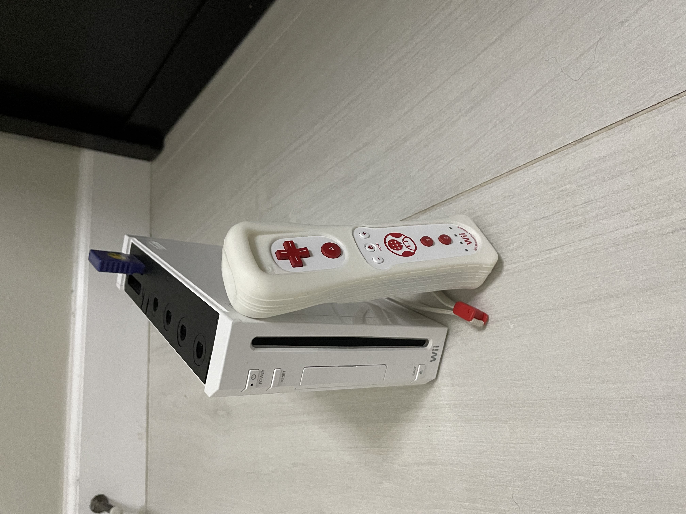
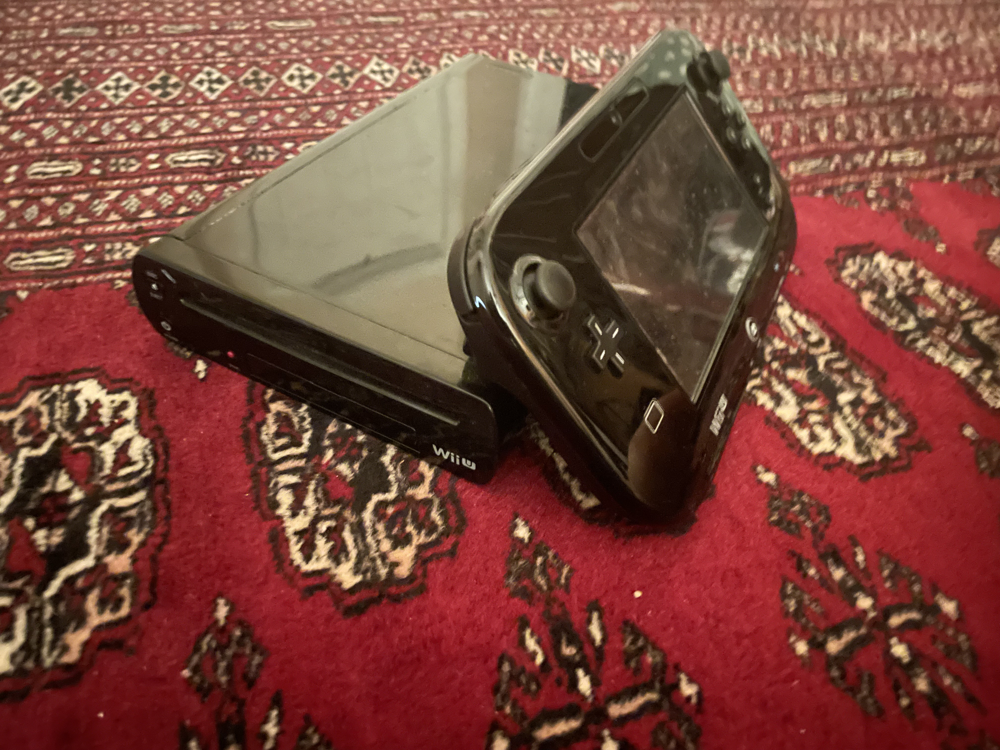

The NES was a video game console that released in 1985 for $179.99 ($513.58 2023 USD). It released two years after the video game crash of 1983, and it strived hard to be put in the toy aisle, bundling a toy (named ROB) and making the console look like a VCR (a device used to watch prerecorded tapes). It was bundling with a copy of Super Mario Bros./Duck Hunt shortly after the release of the system, and it was a hit among consumers. It has been said that it single-handedly saved the video game industry. To prevent another video game crash, Nintendo added a lockout chip which prevented any game not made by Nintendo to not be able to be played on it. The Nintendo Entertainment System introduced many classics, such as Mario, Metroid, the Legend of Zelda, and more.
The SNES was a video game console that released in 1991 for $199 ($448.59 2023 USD). It competed against the Genesis, and later the Playstation and Saturn later in its lifespan. It came out with Super Mario World, which is stated to be a very good game, and it also had other releases such as Super Mario Kart, Donkey Kong Country, Legend of Zelda: Link to the Past, F-Zero, Super Street Fighter II, Earthbound, and others. In Japan, the Satellaview allowed players to download games onto a special flash game pak and play them.
The N64 was a video game console that released in 1996 for $199.99 ($391.35 2023 USD), which was made to be an impulse buy and for it to be competetive with the Playstation and the Sega Saturn. It used game cards, which wasn't used for many game consoles at the time (they used CDs with more space than game cards). These game cards were harder to pirate than CDs, but it costed more money and had less space, which discouraged developers from developing games for it, which is why the N64 only had ~200 offiial games.
The GCN was a video game console that released in 2001. It released for $199.99 ($346.71 2023 USD). The GameCube was the first Nintendo console to use optical discs, but they were the size of mini-sized CDs, which didn't allow the GCN to have as much storage as its competitors. It didn't do so well, especially against the OG Xbox and PS2, the latter being the most sold video game console in history. It had a more powerful processor though, and had great games including Paper Mario: The Thousand Year Door, Luigi's Mansion, Super Smash Bros. Melee, Metroid Prime, Mario Kart: Double Dash, and more.
The Wii was a video game console released in 2006 for $249.99 ($380.72 2023 USD), but it sold out quickly because of the people waiting over midnight and buying all of the stock. It became highly sought after. It came bundled with Wii Sports. It had motion controls and mimiced the a television with its channels. It was Nintendo's first for many things, including Virtual Console, being different from its competitors, and others. The Wii also had GCN backwards compatibility, but it was removed in later revisions.
The Wii U was a video game console that released in 2012. It had 2 different models, one with 8GB and no game included (the Basic set) for $299.99 ($401.16 2023 USD) and the 32GB one and came bundled (Nintendo Land) with $349.99 ($468.03 2023 USD) (Dexluxe set). It didn't sell as well as the Wii because of poor marketing and people thought it was an add-on for the Wii because of focus on the Gamepad. It had a full sized propritary Blue-ray-like Game Disc with 32 GB max of data. The Wii U below is a Deluxe Model Wii U.
